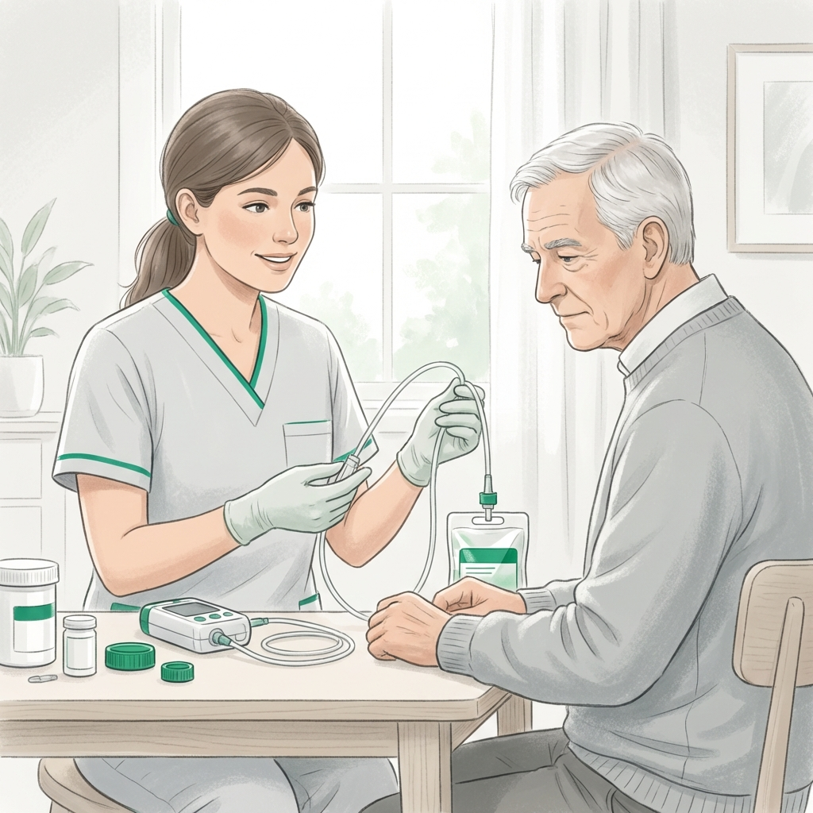
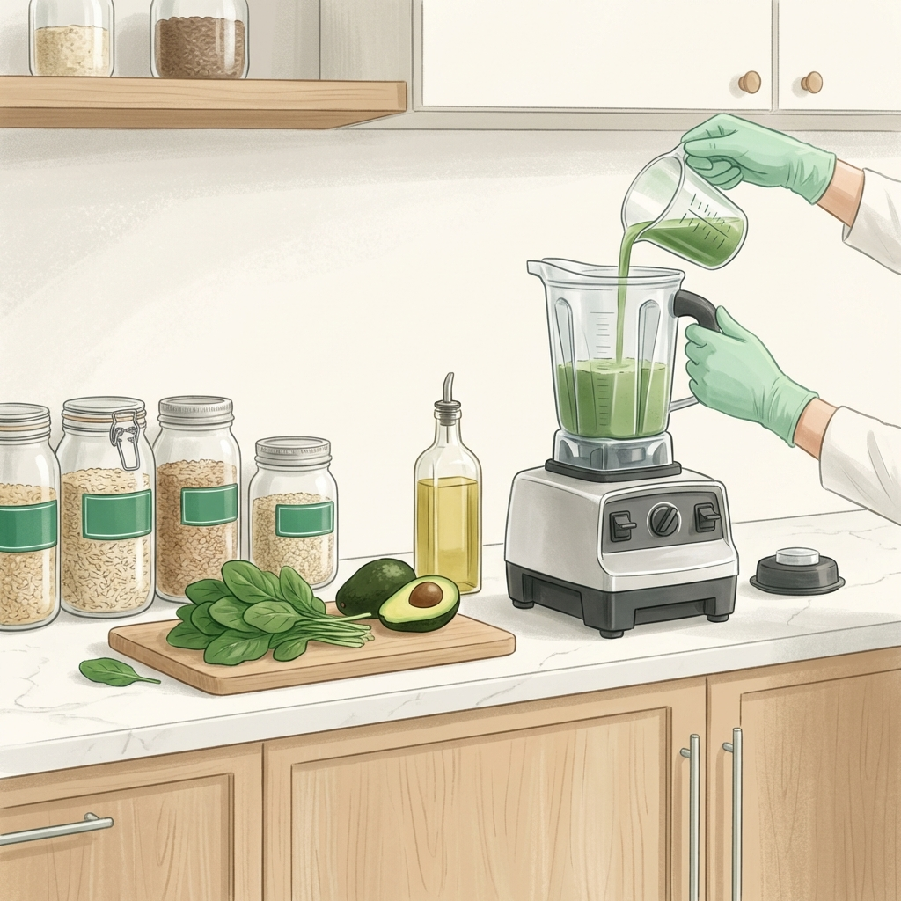

Especialistas en Nutrición Enteral y Manejo de Sondajes
Acompañamiento clínico de alta precisión para pacientes que requieren alimentación por sonda, garantizando seguridad, eficiencia metabólica y tranquilidad para la familia.

La nutrición enteral es una herramienta de vida cuando la vía oral no es suficiente o segura. Sin embargo, requiere un manejo técnico estricto para evitar complicaciones como infecciones, obstrucciones de la sonda o malestar gastrointestinal.
En Clínica Denki, somos expertos en el diseño de fórmulas artesanales e industriales, capacitando a los familiares para que el proceso en casa sea tan seguro y profesional como en el hospital, devolviendo la estabilidad al paciente.
Protocolos de Seguridad Enteral
Ciencia aplicada al soporte nutricional especializado.

Fórmulas de Precisión
Diseño de mezclas artesanales o industriales que cubren exactamente los requerimientos del paciente.
Seguridad Gastrointestinal
Protocolos para optimizar la infusión y evitar complicaciones como diarreas o distensión.
Educando al Cuidador
Sabemos que la responsabilidad de una sonda puede ser agobiante; nosotros te damos la seguridad técnica.
Seguridad Familiar: Transformamos la complejidad técnica en pasos sencillos y seguros para que la familia maneje la sonda con confianza.
Preguntas de Familiares
¿Cuál es mejor: fórmula casera o industrializada?
Depende de la condición del paciente y su capacidad digestiva. Evaluamos pros y contras para tu caso particular.
¿Qué hago si la sonda se tapa?
Te enseñamos técnicas preventivas y de desobstrucción segura. Contáctanos de inmediato si no fluye la dieta.
¿Se puede bañar al paciente con la sonda?
Sí, con los cuidados de higiene y fijación adecuados que te enseñamos en nuestra capacitación domiciliaria.
Asegura la Nutrición de tu Ser Querido
Inicia hoy un protocolo de nutrición enteral profesional y protege la estabilidad de tu paciente en casa.